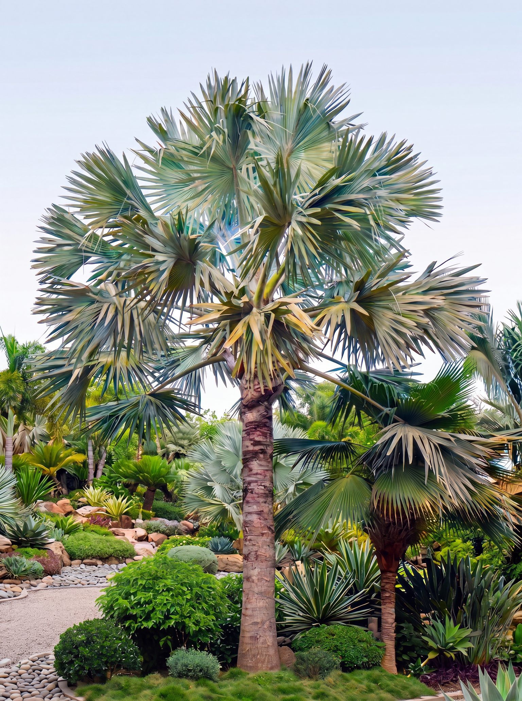
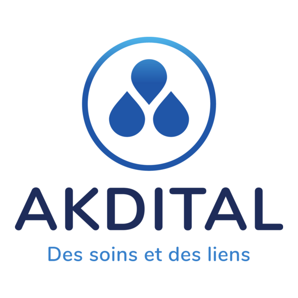
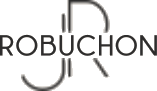
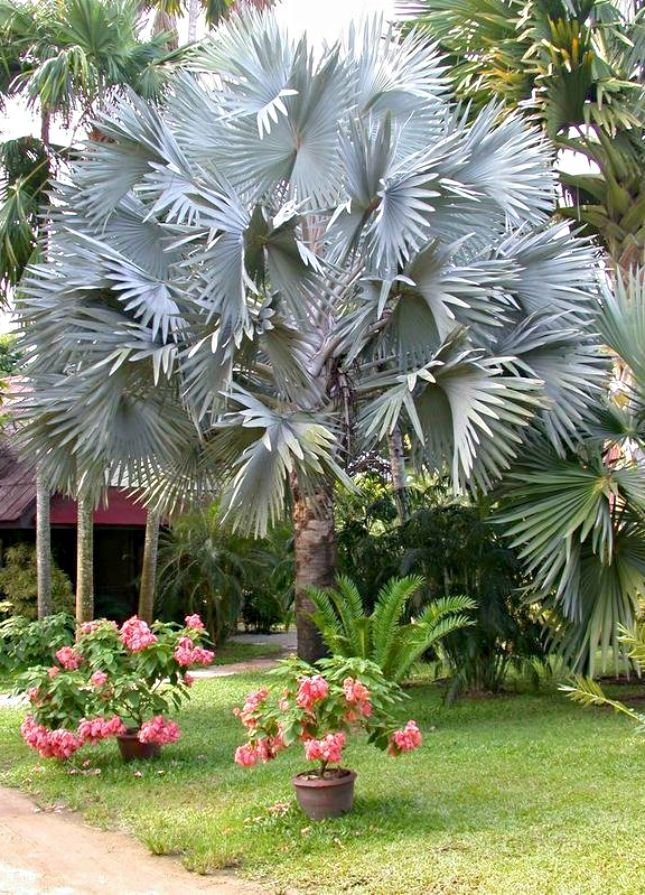
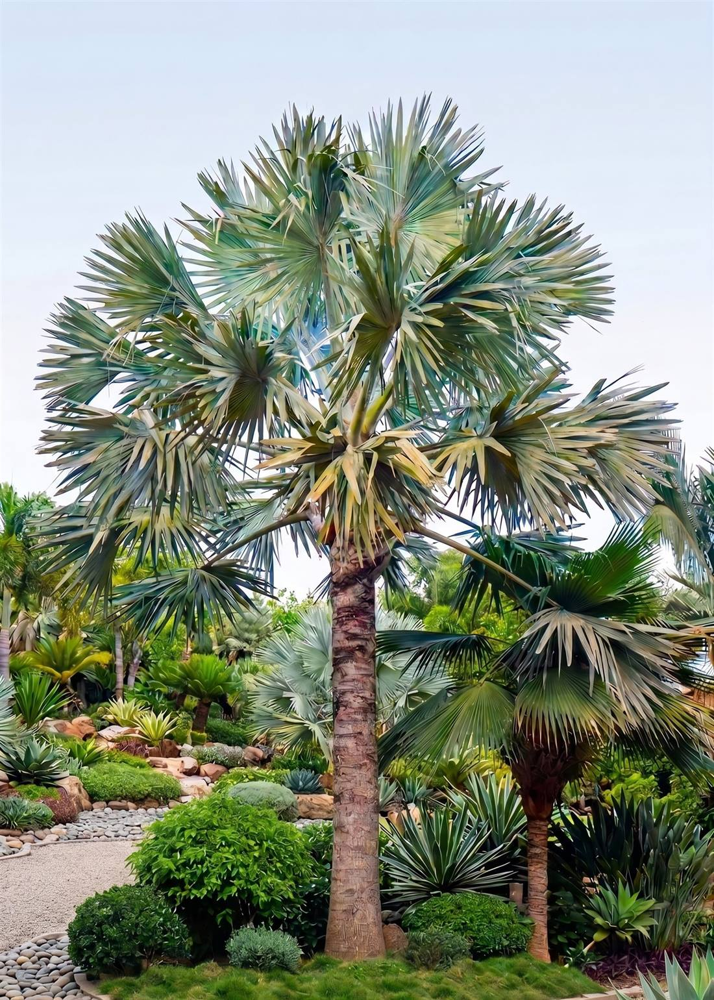
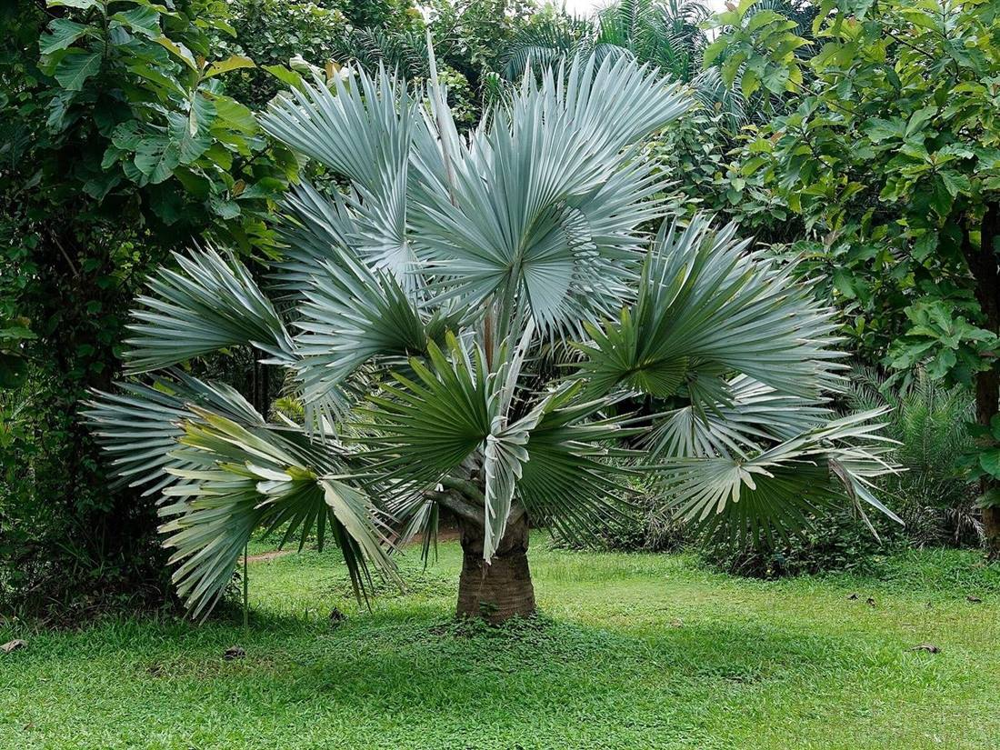
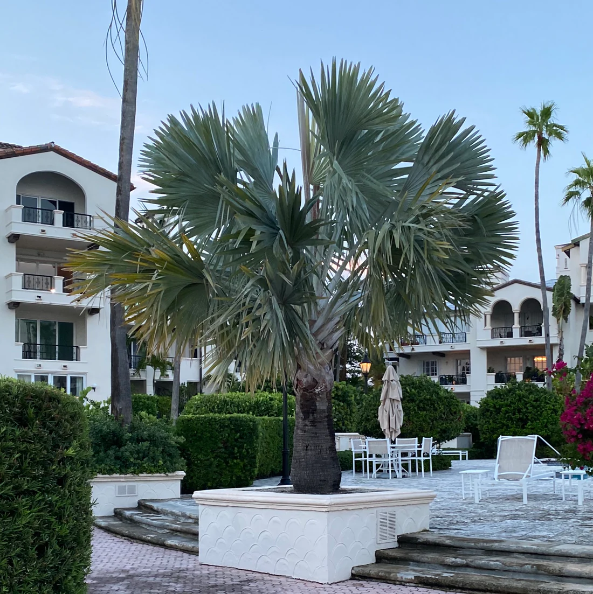

L'éventail qui jaunit dans six mois.
- 01Origine douteuse, sans certificat phytosanitaire.
- 02Racines coupées à la pelle, motte non préparée.
- 03Sol argileux non drainé, asphyxie racinaire et pourriture.
- 04Zéro garantie. Zéro suivi. Zéro recours.
Bismarckia nobilis. L'éventail argenté du Jardin Majorelle, élevé en pépinière à Aïn El Aouda et planté dans votre cour par notre équipe. Sujets calibrés de 20-30 à 50-60 cm de stipe, en motte ou en conteneur, garantis à la reprise.
4.8 Google Depuis 2004 200+ villas

Garantie reprise
3 mois, suivi WhatsApp à vie
Sujets en pépinière et Bismarckia adultes en situation, au Maroc et sous d'autres climats. La couleur ne ressemble à rien d'autre.
Décrivez votre projet. Nous revenons sous 24 heures avec un devis chiffré incluant calibre, conditionnement, livraison, plantation et garantie reprise.
Une réponse précise, pas un email automatique.
Nous validons accès, exposition et sol sur place.
Camion-grue, calage, premier arrosage compris.
Remplacement assuré en cas d'échec malgré le protocole.
Les informations que vous saisissez servent à préparer votre demande de devis. Aucune saisie partielle n’est transmise.
Lorsque vous choisissez WhatsApp ou votre messagerie, le message reste à confirmer dans l’application correspondante. Si un service d’envoi est configuré, seules les données du formulaire lui sont transmises au moment de l’envoi.
Cette version ne contient aucun outil de suivi publicitaire. Les coordonnées Green Nouala seront ajoutées avant la mise en ligne.


La même espèce emblématique que l'on admire au Jardin Majorelle de Marrakech. Stipe compact, palmes rigides en éventail parfait, couleur métallique inégalée. Originaire des savanes sèches de Madagascar, sa pruine cireuse agit comme un réflecteur solaire.
Le Bismarckia est un palmier architectural : sa réussite tient à l'adéquation entre le spécimen, le site, et l'accès. Vérifiez ces 4 points. Notre équipe valide tout sur place pour les projets ≥ 3 palmiers.
Plein soleil pour un sujet établi : la cire épicuticulaire qui donne le bleu argenté s'intensifie avec la lumière, c'est pourquoi Marrakech, Agadir et Dakhla donnent les sujets les plus spectaculaires. Un jeune sujet, lui, s'acclimate progressivement — 50 à 80 % d'ensoleillement les premières années avant le plein soleil. Nous vous remettons le protocole à la livraison.
Plein soleil → bleu maximal · acclimatation progressive
En culture marocaine, un Bismarckia plafonne autour de 9 à 12 m (contre près de 25 m dans son habitat malgache), pour une couronne de 3,5 à 5 m d'envergure. Pensez aux lignes électriques, balcons, auvents et toits.
Anticipez 10 m libres au-dessus
La couronne adulte atteint 3,5 à 5 m : prévoyez au moins 4 m de dégagement autour du stipe. En allée d'entrée villa (Palmeraie, Anfa, Souissi), comptez 6 m entre sujets pour que chaque éventail reste lisible — en dessous de 5 m, les couronnes se touchent à maturité, ce qui peut être un parti pris mais doit être choisi.
4 m de dégagement · 6 m en allée
Nous arrivons avec les moyens de manutention adaptés au calibre et au conditionnement. Signalez-nous la largeur du portail, la hauteur des fils électriques et la portance du sol près de la fosse : nous calons le matériel en conséquence.
Manutention dimensionnée au calibre
Éventail rigide bleu argenté. Bien moins ciblé que le Phoenix par le charançon. Le palmier-signature.
★★★★★ Centerpiece d'exception
Plumeux retombant, vert classique. Hôte primaire du charançon rouge.
Élagage régulier · classique
Hauteur vertigineuse, feuillage vert. Volume vertical accessible, hôte documenté du charançon.
Accessible · vertical
Touffe basse multi-stipes, vert-gris. Méditerranéen occidental, spontané au Maroc, comblement de massifs bas.
Massif bas · accessible
| Critère | Bismarckia | Phoenix | Washingtonia | Chamaerops |
|---|---|---|---|---|
| Silhouette | Éventail rigide | Plumeux retombant | Éventail retombant, à filaments | Touffe basse |
| Couleur | Bleu argenté unique | Vert classique | Vert moyen | Vert-gris |
| Entretien | Faible | Élagage régulier | Élagage régulier | Faible |
| Charançon rouge | Hôte secondaire | Hôte primaire | Hôte documenté | Hôte documenté |
| Effet | Centerpiece | Classique | Volume vertical | Massif méditerranéen |
| Besoin en eau une fois établi | Faible | Modéré | Modéré | Très faible |
Depuis plus de vingt ans, la Green Nouala élève le standard végétal de la côte ouest marocaine. Pas d'importations stressées, uniquement de l'acclimatation patiente.
Produire un Bismarckia nobilis mature demande du temps. Chaque palmier est nourri, cerné, et préparé aux conditions spécifiques de son futur environnement, qu'il s'agisse des brises marines de Casablanca ou du climat sec de Marrakech.
Nous ne sommes pas de simples revendeurs. Nous sommes des producteurs engagés auprès des architectes paysagistes et des promoteurs de l'hôtellerie de luxe pour garantir des réceptions de chantiers irréprochables.
Formulaire avec taille, quantité, ville.
Pour ≥ 3 spécimens, validation sur place.
Manutention, mise en place, calage.
Premier arrosage, suivi WhatsApp 3 mois.
Aucun autre palmier au Maroc ne dessine cette ligne aussi pure et symétrique.

La même couleur métallique qu'au Jardin Majorelle. S'intensifie sous la lumière de Marrakech, Agadir, Dakhla.

Une fois établi, il supporte de longues périodes sèches grâce à sa cuticule cireuse — adapté au climat marocain et sensiblement moins gourmand qu'un Phoenix canariensis.

Hôte secondaire du Rhynchophorus ferrugineus , dont les Phoenix sont les hôtes primaires — sans pour autant être immunisé. Le ravageur reste circonscrit à la zone Tanger-Tétouan depuis sa détection en 2008.
L'objet unique qui signe une villa Palmeraie, Anfa, Souissi, Hivernage. Comme au Jardin Majorelle, mais chez vous.
Pour la villa · le particulier · le plus fort calibre disponible
Alignement rythmé tous les 6 m, calibres homogènes. Deux sujets symétriques de part et d'autre du portail. L'effet esplanade.
Pour le domaine · 6 à 12 sujets de calibre égal · visite chantier offerte ≥ 3

Programmes Vision Tourisme : Agadir, Taghazout, Saïdia, Dakhla, CDM 2030. L'effet d'arrivée hors standard.
Pour le maître d'ouvrage · volumes disponibles en stock · papiers phytosanitaires
Silhouette graphique sur minimalisme chaud marrakchi : tadelakts, béton ciré, corten, piscines à débordement.
Pour le paysagiste · l'architecte · fournisseur de référence depuis 2004
Sur sujet établi, la forme argentée tolère de courtes gelées jusqu'à −3 °C ; c'est la durée qui tue, pas le minimum atteint. Idéal de Casa à Dakhla. Possible avec voile d'hivernage à Meknès et Fès plaine. À éviter dans le Moyen-Atlas. Un sujet fraîchement planté est nettement plus sensible : protégez-le les premiers hivers, y compris sur le littoral, et gardez-le au sec pendant l'épisode froid. Nos pépiniéristes valident votre micro-climat avant devis.
Le charançon rouge (Rhynchophorus ferrugineus) est présent au Maroc depuis sa détection à Tanger en décembre 2008, sur Phoenix canariensis. Il reste circonscrit à la zone Tanger-Tétouan, placée sous surveillance officielle, et la lutte est obligatoire sur tout le territoire. Le Bismarckia est un hôte secondaire : les Phoenix sont les hôtes primaires et concentrent l'essentiel des attaques. Avantage réel, mais pas une immunité — nous intégrons la surveillance au suivi.
Le prix dépend du calibre de stipe, du conditionnement (motte ou conteneur), de la quantité et des contraintes du chantier. Décrivez votre projet : nous revenons sous 24 heures avec un devis chiffré, livraison et plantation comprises. Conseil offert pour les projets de 3 sujets et plus, tarif dégressif pour les paysagistes et les volumes.
Oui. Tous nos Bismarckia plantés par notre équipe sont garantis à la reprise pendant 3 mois, sous réserve du calendrier d'arrosage. Suivi WhatsApp à vie. En cas d'échec malgré le protocole, remplacement assuré.
À la plantation : arrosage quotidien le premier mois, puis 2 à 3 fois par semaine pendant plusieurs mois, puis au moins une fois par semaine les deux premières années. Sol drainant impératif — l'excès d'eau est le seul vrai danger. Une fois établi : très tolérant à la sécheresse et à la chaleur sèche, avec un besoin en eau faible, sensiblement inférieur à celui d'un Phoenix canariensis. Nous remettons le calendrier d'arrosage détaillé à la livraison.
Oui. De Rabat à Dakhla, de Tanger à Laâyoune. Livraison, manutention et plantation par notre équipe, avec les moyens adaptés au calibre et au conditionnement. Validation préalable des accès (largeur portail, hauteur des fils électriques, portance du sol). Papiers phytosanitaires selon le cas.
20+ ans de pépinière au Maroc, 200+ villas plantées. Chaque Bismarckia livré par nos soins est suivi pendant 3 mois après plantation, et reste joignable par WhatsApp pour la durée de vie de la plante.
Bismarckia nobilis. Du producteur direct, planté par notre équipe, jusqu'à votre cour. Depuis 2004.